원자력기사 (2012-09-08 기출문제)
1과목: 원자력기초
1. 다음 중 원자핵을 구성하고 있는 핵자들간에 작용하는 핵력(Nuclear Force)에 대한 설명으로 옳지 않은 것은?
- 양성자간의 반발력보다 훨씬 큰 힘이다.
- 인력이 아닌 척력이다.
- 전하와 무관하다.
- 핵과 같이 극히 짧은 거리에서만 작용하는 힘이다.
(정답률: 알수없음)

2. 다음 방사붕괴 형태 중 원자핵의 양성자 수 및 중 성자 수에 변화가 없는 것은?
- 알파 붕괴
- 베타 붕괴
- 감마 붕괴
- 중성자 붕괴
(정답률: 알수없음)
3. 중성자와 핵의 비탄성 산란반응에 대한 설명 중 옳은 것은?
- 충돌 전후 총 운동에너지는 보존된다.
- 산란 후 핵은 여기상태로 존재한다.
- 저에너지 중성자가 가벼운 질량의 핵과 반응할 때 주로 발생한다.
- 충돌 후 중성자는 핵에 포획된다.
(정답률: 알수없음)
4. 중성자에 대한 미시적 단면적을 설명한 것 중 옳은 것은?
- 핵이 중성자와 반응을 일으키는 확률에 비례한다.
- 미시적 단면적의 단위인 bam은 1024m2의 면적에 해당한다.
- 미시적 단면적은 실제 핵의 단면적과 동일하다.
- 미시적 단면적은 산란 단면적(σscattering)과 포획단면적(σcapture)으로 구성된다.
(정답률: 알수없음)
5. 다음 설명 중 옳은 것은?
- 핵분열에너지의 대부분은 중성자의 운동에너지이다.
- 핵분열 후 생성되는 즉발중성자의 평균에너지는 수 GeV 정도이다.
- 원자로가 트립(Trip)되면 노심에서 생성되는 열에너지는 즉시 0이 된다.
- 핵분열 시 방출 에너지의 일부는 발전소에서 회수할 수 없다.
(정답률: 알수없음)
6. 질량수 A, 양성자수 Z, 수소질량 mH, 중성자질량 mN, 측정질량(Experimental Mass) M일 때 질량결손을 나타낸 것은?
- M - ZmH - (A - Z)
- ZmH + (A - Z)mN - M
- M - ZmN - (A - Z)
- ZmN + (A - Z)mH - M
(정답률: 알수없음)
7. 다음 노심증배계수 구성인자 중 제논과 같은 독물질에 의해 가장 많이 영향을 받는 것은?
- 재생계수(η)
- 속분열인자(Fast Fission Factor)
- 공명이탈확률(Resonance Escape Probability)
- 열중성자 이용률(Thermal Utilization Factor)
(정답률: 알수없음)
8. 다음 중 1군 확산 방정식(One-group diffusion Equation)에 사용되는 인자가 아닌 것은?
- 확산계수
- 흡수단면적
- 산란단면적
- 핵분열단면적
(정답률: 알수없음)
9. 경수형 원자로에서 핵연료의 도플러효과(Doppler Effect)에 가장 크게 기여하는 핵종은?
- 233U
- 235U
- 238U
- 239Pu
(정답률: 알수없음)
10. 천연 우라늄(U) 1g 중에 포함된 235U의 원자수는? (단, 우라늄의 원자량은 238.028이며 천연우라늄에 존재하는 235U의 비율은 0.714% 이다.)
- 1.806 × 1018개
- 1.806 × 1019개
- 1.806 × 1020개
- 1.806 × 1021개
(정답률: 알수없음)
11. 다음 중 같은 양의 핵연료를 가지고 증배계수를 크게 할 수 있는 방법이 아닌 것은?
- 원자로 노심 외곽에 반사체를 설치하여 중성자 누설을 줄이는 방법
- 핵연료와 감속재를 따로 분리하지 않고 균질 원자로심을 구성하여 중성자 공명흡수를 줄이는 방법
- 핵연료 이외의 물질에 의한 중성자 흡수를 줄여서 열중성자이용률(f)을 크게 하는 방법
- 핵분열성 물질의 농축도를 높여 중성자 재생인자(η)를 크게 하는 방법
(정답률: 알수없음)
12. 중성자의 특성과 반응률에 대한 설명 중 옳지 않은 것은?
- 반응률(R)은 거시적 반응단면적(Σ)과 중성자속(Φ)의 곱으로 표시한다.
- 반응률은 단위체적, 단위시간에 일어나는 반응의 수를 나타낸다.
- 속중성자속(Φf)은 연료내에서 가장 낮고, 감속재에서 가장 높다.
- 열외중성자는 238U 및 240Pu 내에서 공명흡수를 일으킨다.
(정답률: 알수없음)
13. 원자로의 증배계수가 k=1.000에서 1.001로 변화되었다. 증배계수 변화에 상응하는 반응도는? (단, 원자로의 βeff=0.0065)
- 0.001$
- 0.0065$
- 0.065$
- 0.154$
(정답률: 알수없음)
14. 경수로 원자로의 반응도 제어와 관련한 설명 중 틀린 것은?
- 가연성 독물질봉은 원자로를 운전함에 따라 중성자 흡수단면적이 작은 물질로 전환된다.
- 가연성 독물질봉은 중성자 산란단면적이 큰 물질로 제조된다.
- 가장 널리 사용되는 화학적 독물질은 붕산이다.
- 원자로 냉각재에 붕산을 주입하여 장기적 반응도를 제어한다.
(정답률: 알수없음)
15. 원자로 재기동 불능시간(Reactor Dead Time)에 가장 큰 영향을 주는 핵종은?
- 135Xe
- 149Sm
- 10B
- 113Cd
(정답률: 알수없음)
16. 경수로의 제어봉 반응도값(Rod Worth)에 관한 설명 중 틀린 것은?
- 제어봉 반응도값은 제어봉의 삽입위치(높이)에 따라 변한다.
- 제어봉 반응도값은 독물질의 농도에 따라 변한다.
- 노심의 온도가 높아지면 제어봉 반응도값은 감소한다.
- 인근 제어봉과의 거리가 가까우면 제어봉 반응도값은 작아진다.
(정답률: 알수없음)
17. 출력이 1,000MWth로 운전되는 원자로에 주기 τ= 80초로 출력변화를 줄 때 80초 후의 출력은?
- 1,000MWth
- 2,718MWth
- 4,526MWth
- 7,389MWth
(정답률: 알수없음)
18. UO2 60톤(Ton)이 장전된 원자로가 정격 열출력 3,000MWth, 이용율 75%로 400일간 운전할 경우 연료의 평균 연소도는?
- 10,000 MWD/MTU
- 15,000 MWD/MTU
- 20,000 MWD/MTU
- 25,000 MWD/MTU
(정답률: 알수없음)
19. 다음 지발중성자에 대한 설명 중 옳은 것은?
- 235U의 핵분열시 방출되는 중성자의 대부분을 차지한다.
- 평균 수명이 약 13초이며 원자로 제어에는 영향을 미치지 않는다.
- 원자로는 지발중성자만으로 임계유지가 가능하다.
- 239Pu는 235U에 비해 지발중성자 분률이 더 작다.
(정답률: 알수없음)
20. 국내에서 운전 중인 CANDU 원자로에 대한 설명 중 틀린 것은?
- 냉각재와 감속재로 모두 중수를 사용한다.
- 핵연료는 수평으로 설치된 압력관 내에 장전된다.
- 정상운전 중에 핵연료를 교체한다.
- 정상운전 중 출력은 흡수봉(Mechanical Control Absorber)으로 제어한다.
(정답률: 알수없음)
2과목: 핵재료공학 및 핵연료관리
21. 다음 중 “유체의 관성력과 점성력의 비”를 나타내는 무차원 수는?
- 레이놀드(Reynolds) 수
- 프라우드(Froude) 수
- 웨버(Weber) 수
- 스토크(Stokes) 수
(정답률: 알수없음)
22. 원자력발전소에서 사용되는 유량측정계시(오리피스, 유량노즐, 벤츄리관)는 어떤 원리를 이용하여 유량을 측정하는가?
- 차압의 제곱에 비례
- 차압의 제곱에 반비례
- 차압의 제곱근에 비례
- 차압의 제곱근에 반비례
(정답률: 알수없음)
23. 가압경수로형 원자로 노심에서 고온수로의 축방향 위치별 출력이 코사인(Cosine) 함수형태 일 때, 고온수로에서 실제 열유속(Actual Heat Flux. q"actual)과 임계열유속(Critical Heat Flux, q"CHF) 및 핵비등이탈률(DNBR) 변화를 축방향 위치별로 적절히 나타낸 것은?
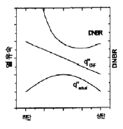
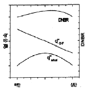
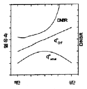
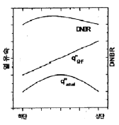
(정답률: 알수없음)
24. 원자로 압력용기가 급격히 냉각됨으로써 야기될 수 있는 문제점은?
- 가압열충격(PTS)
- 응력부식균열(SCC)
- 정지여유도 상실
- 과냉각도 상실
(정답률: 알수없음)
25. 가압경수로형 원자로 압력용기는 중성자 조사에 의해 수명말기까지 샤르피 충격시험 곡선의 최대 흡수 에너지가 ( ㉮ ) 아래로 낮아지거나 기준 무연성천이온도(RTNDT)가 ( ㉯ )를 초과하지 않아야 한다. 다음 중 ㉮와 ㉯에 들어갈 값은?
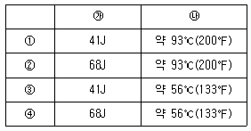
- ①
- ②
- ③
- ④
(정답률: 알수없음)
26. 고에너지 중성자 조사에 의한 원자로 압력용기의 취화 현상에 대한 설명 중 틀린 것은?
- 조사량이 증가함에 따라 항복강도 및 연성-취성 천이온도가 증가
- 취화 정도는 합금조성에 영향을 받으면 구리(Cu), 니켈(Ni) 등의 함량이 영향을 미침
- 가동온도 범위에서 조사온도가 증가할수록 취성이 크게 일어남
- 중성자속(Neutron Flux) 및 미세조직도 취화 정도에 영향을 미침
(정답률: 알수없음)
27. 감속재의 감속비는 중성자와 감속재간 충돌당 손실되는 중성자에너지와 감소재의 거시적 산란단면적에 비례하고 감속재의 거시적 흡수단면적에 반비례한다. 감속재의 감속비가 큰 순서대로 나열한 것은?
- 중수(D2O) → 흑연(Graphite) → Be → 경수(H2O )
- 중수(D2O) → 경수(H2O) → 흑연(Graphite) → Be
- 중수(D2O) → 경수(H2O) → Be → 흑연(Graphite)
- 중수(D2O) → Be → 흑연(Graphite) → 경수(H2O)
(정답률: 알수없음)
28. 가압경수로형 원자로의 정상출력 운전시 펠렛 중심온도, 피복재 표면온도 및 냉각재 온도의 축방향 분포에 대해 맞게 기술한 것은? (단, 연료봉 길이와 펠렛 적층길이는 동일하다고 가정)
- 최대 펠렛 중심온도의 축방향 위치는 연료봉 길이의 중간 지점에서 발생
- 축방향 최대 냉각재 온도는 연료봉 최하단으로부터 약 75% 지점에서 발생
- 최대 피복재 표면온도와 최대 펠렛 중심온도는 동일한 축방향 위치에서 발생
- 축방향 최대 피복재 표면온도는 최대 펠렛 중심온도에 비해 상부 위치에서 발생
(정답률: 알수없음)
29. 금속우라늄 핵연료와 비교한 이산화우라늄(UO2)핵연료의 특성이 잘못 기술된 것은?
- 세라믹 연료의 특성상 고온의 용융점을 가지고 있다.
- 물과 화학적 반응성이 낮아 물을 냉각재로 사용하는 상업용 원전의 핵연료로 사용한다.
- 방사선 조사에 의한 비등방성 뒤틀림이 없어 제원안전성이 높다.
- 상대적으로 높은 열전도도를 가지고 있어 동일한 출력에서 핵연료 온도가 낮다.
(정답률: 알수없음)
30. 가압경수로형 원자로에서 정상운전 및 비정상운전 기간 동안 핵연료의 파손을 방지하고 가상사고시 노심냉각성능을 유지하기 위해 설정한 설계기준 중 틀린 것은?
- 정상운전 중에는 핵연료의 중심선 온도가 이산화우라늄 펠렛의 용융점 보다 낮아야 한다.
- 정상운전 중에 연료봉 표면에서의 열유속((Heat Flux)이 임계 열유속(Critical Heat FluX) 보다 높게 설정되어 열전달 효과가 좋아야 한다.
- 냉각재 상실사고시 피복재의 최고온도는 1,204℃이내 이어야 한다.
- 냉각재 상실사고시 피복재의 최대 산화도는 산화전피복재 두께의 17% 이내 이어야 한다.
(정답률: 알수없음)
31. 가압경수로형 원자로의 노외 중성자계측기에 대한 설명 중 옳지 않은 것은?
- 원자로 축방향의 중성자속 측정
- 원자로 용기로부터 누설되는 중상자속을 감시하여 원자로출력 준위를 측정
- 엔탈피 변화 및 설계시 계산된 열수력 계수값 확인
- 선원영역(기동채널)은 노외 중성자속 검출기에 해당
(정답률: 알수없음)
32. 가압경수로형 원자력발전소의 가압기 특성에 관한 설명 중 틀린 것은?
- 냉각재의 체적변화를 수용하며 고온관에 부착되어 있음
- 정상운전시 가압기 내부는 미포화(Subcooling) 상태의 물과 증기가 공존
- 운전중 냉각재계통 압력을 허용치내로 유지
- 보조전열기(Backuo Heater) 출력은 선형적으로 변하지 않으며 ON/OFF 제어만 가능
(정답률: 알수없음)
33. 화학 및 체적 제어계통(CVCS)의 역할이 아닌 것은?
- 냉각재가 냉각재 펌프 축을 타고 외부대기로 누설되는 것을 방지하기 위하여 축 밀봉수를 공급한다.
- 부식 및 용해성 분열생성물을 제거한다.
- 냉각재 펌프의 고장으로 인한 펌프 사용 불능시 가압기에 보조살수 유량을 제공한다.
- 고압 안전주입 펌프를 가동할 수 있도록 냉각재계통의 압력을 수동으로 감압해 준다.
(정답률: 알수없음)
34. 가압경수로형 원자력발전소의 냉각재에 첨가된 붕산수에 대한 설명으로 맞지 않는 것은?
- 붕산수를 사용함으로써 제어봉 집합체 수를 줄일 수 있다.
- 노심 내부의 국부출력을 제어한다.
- 가연성흡수봉을 사용하면 요구되는 붕산농도가 작아진다.
- 제어봉에 비해 붕산수는 원자로심내 출력분포를 균일하게 한다.
(정답률: 알수없음)
35. 증기발생기 내부 급수 분산환(Feedering)에 J-Type 또는 C-Type의 관을 설치하는 이유는?
- 부식(Corrosion) 방지
- 수격(Water Hammer) 현상 방지
- 재순환 비율(Recirculation Ration) 증대
- 정상운전중 급수링(Feedering) 진동 방지
(정답률: 알수없음)
36. 증기발생기에서 운전중 발생 가능한 수위팽창(Swelling) 현상과 관계가 없는 것은?
- 터빈부하 급격한 증대
- 주증기 안전밸브 열림
- 증기덤프밸브 열림
- 원자로 및 터빈 정지
(정답률: 알수없음)
37. 가압경수로형 원자력발전소의 증기발생기에서 발생하는 주요 손상기구가 아닌 것은?
- 프레팅(Fretting)
- 열시효(Thermal Aging)
- 응력부식균열(Stress Corrosion Cracking)
- 피팅(Pitting)
(정답률: 알수없음)
38. 그림 1은 원자로 2차계통의 재열 랭킨(Rankine) 사이클이다. 이 그림의 ④와 ⑤사이 공정은 T-S 선도 (그림 2)의 어느 공정에 해당되는가?
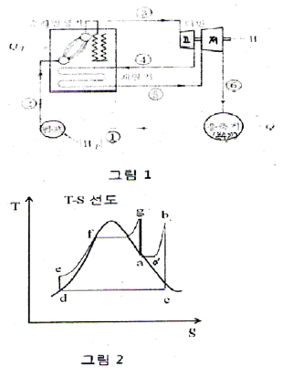
- a - b
- c - d
- e - f
- f - g
(정답률: 알수없음)
39. 다음의 괄호에 들어갈 합금원소가 순서대로 적절히 나열된 것은?
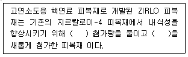
- 주석(Sn), 나이오븀(Nb)
- 철(Fe), 크롬(Cr)
- 니켈(Ni), 주석(Sn)
- 니켈(Ni), 나이오븀(Nb)
(정답률: 알수없음)
40. 아래 조건에서 경수로 원동형 우라늄 펠렛의 중심 온도는? (단, 펠렛열전도도(k)는 펠렛온도 및 연소도에 따라 일정하다고 가정)
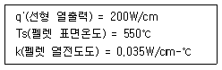
- 955℃
- 1,0⑤℃
- 1,045℃
- 1,095℃
(정답률: 알수없음)
3과목: 발전로계통공학
41. 가압경수로형 원자력발전소 원자로냉각재의 수화학 관리에 관한 설명으로 틀린 것은?
- 저온정지 상태에서는 하이드라진(N2H4)을 첨가하여 용존산소를 제거한다.
- 출력운전 상태에서는 수소기체를 주입하여 용존산소를 제거한다.
- 붕소는 주로 반응도 제어를 위해 사용한다.
- 주기초 보다 주기말에 붕소의 농도가 높다.
(정답률: 알수없음)
42. 액체 방사성폐기물을 제염계수가 5인 이온교환기로 처리하였다. 처리하기 전에 액체 방사성폐기물에 존재하던 방사능 이온교환기를 통해 제거된 방사능의 비율은?
- 80%
- 85%
- 90%
- 95%
(정답률: 알수없음)
43. 최근 개발되고 있는 고온가스냉각로에 관한 설명으로 옳은 것은?
- 액체질소가 냉각재로 고려되고 있다.
- 드라이아이스가 감속재로 고려되고 있다.
- 세라믹으로 피복된 입자상태의 핵연료가 고려되고 있다.
- 원자력을 이용한 해수담수화가 주목적이다.
(정답률: 알수없음)
44. 우라늄 농축에 소요되는 비용을 기술하기 위하여 사용하는 단위인 SWU(Separative Work Unit)에 관한 설명으로 틀린 것은?
- SWU의 단위는 질량(kg)이다.
- 농축우라늄의 질량이 클수록 SWU가 크다.
- 감손우라늄의 질량이 클수록 SWU가 크다.
- 천연우라늄의 질량이 클수록 SWU가 크다.
(정답률: 알수없음)
45. 핵연료 피복관의 펠렛-피복재 상호작용(PCI)에 관한 설명으로 옳은 것은?
- 연소도가 낮은 핵연료에서 발생하기 쉽다.
- 출력이 서서히 감소될 경우 발생하기 쉽다.
- 응력부식균열(SCC)과는 관계가 없다.
- 요오드에 의해 유발된다.
(정답률: 알수없음)
46. 한국표준형 원자력발전소의 핵연료집합체에 관한 설명으로 틀린 것은?
- 핵연료봉은 17× 17 정방형으로 배열되어 있다.
- 제어봉 안내관에는 중성자 선원봉도 삽입된다.
- 노내 핵계측관은 집합체의 중심에 배치되어 있다.
- 최하단 지지격자의 재질은 다른 지지격자의 재질과 다르다.
(정답률: 알수없음)
47. 금속 핵연료에 관한 설명으로 틀린 것은?
- U-Zr 합금은 대표적인 금속 핵연료의 재료이다.
- 이산화우라늄 핵연료 보다 높은 연소도를 얻는데 유리하다.
- 이산화우라늄 핵연료 보다 녹는점이 높다.
- 이산화우라늄 핵연료 보다 열전도도가 높다.
(정답률: 알수없음)
48. 원자력발전소 구조재료의 부식의 형태 중 틈새부식과 비슷하나 보호피막이 부분적으로 파괴된 경우 혹은 재질이 비균질적인 경우같이 비교적 화학적 활성이 큰 부위부터 집중적으로 부식이 일어나는 형태를 무엇이라 하는가?
- 전면부식
- 점식
- 선별용해부식
- 결정입계부식
(정답률: 알수없음)
49. 원자로 냉각재 중에 존재하며 중성자 흡수단면적이 커서 독물질로 작용하여 반응도에 영향을 주는 핵분열 생성물은?
- Xe, I
- Xe, Sm
- Xe, Kr
- Xe, Cs
(정답률: 알수없음)
50. 중수제조나 삼중수소분리 등을 위한 수소동위원소 분리공정으로 이용되지 않는 공정은?
- 증류공정
- 원심분리공정
- 전기분해공정
- 화학교환반응공정
(정답률: 알수없음)
51. 핵연료 제조공정에서 우라늄 원광으로부터 조 엘로우 케이크(Crude Yellow Cake)를 만들어내는 공정을 무엇이라 하는가?
- 정련
- 변환
- 동위원소 분리
- 재변환
(정답률: 알수없음)
52. 다음 중 초우라늄(TRU) 원소에 해당하지 않는 원소는?
- Pu
- Cm
- Am
- Nd
(정답률: 알수없음)
53. 사용후핵연료 재처리 방법은 크게 습식 재처리법과 건식 재처리법으로 나눌 수 있다. 다음 중 습식 재처리 방법이 아닌 것은?
- PUREX
- COEX
- Pyro-Process
- UREX
(정답률: 알수없음)
54. 핵연료 피복관 재료의 요건에 해당하지 않는 것은?
- 중성자 흡수단면적이 작을 것
- 열전도도가 낮을 것
- 냉각재에 대한 내식성이 좋을 것
- 중성자 조사에 따른 손상이 작을 것
(정답률: 알수없음)
55. 우라늄 화합물중 탄화물의 특징이 아닌 것은?
- 물 또는 증기와 신속히 반응한다.
- 상온에서만 안정하다.
- 고속증식로의 연료로 사용된다.
- 단일 고체상의 조성을 이루고 있다.
(정답률: 알수없음)
56. 원자력 발전소에서 발생되는 폐기물은 여러 가지 방사성 핵종을 함유하고 있다. 다음 중 기체폐기물이 주로 발생되는 곳이 아닌 것은?
- 붕산회수 계통 배수 탱크 배기
- 탈염기 재생
- 격납용기 퍼지
- 체적 제어탱크의 배기
(정답률: 알수없음)
57. 다음 방사성폐기물 육지처분시스템의 구성 내용 중 옳지 않은 것은?
- 폐기물은 고체 형태이어야 하며, 지하수에 의한 용해도 및 침출성이 작아 방사성 핵종의 유출을 최소화 할 수 있어야 한다.
- 처분부지는 주요 지각 운동지역으로부터 멀리 떨어져 있어야 한다.
- 처분시설은 필요시 적절하게 감시가 가능하게 설계, 건설되어야 한다.
- 폐기물은 비표면적이 높고, 가능한 부피가 최소이어야 한다.
(정답률: 알수없음)
58. 원자력발전소 계통의 신뢰도는 수질에 의존한다. 수질 관리를 위하여 행하는 일반적 원자로 수화학의 목적으로 옳은 것은?
- 침적물에 의한 중성자 포획
- 연료표면의 오염 유지
- 노심내 유기물 유입 최대화
- 재료에 대한 물의 공격성 감소
(정답률: 알수없음)
59. 다음 나열된 핵종 중 사용되는 산업분야가 옳지 않은 것은?
- 60Co, 65Zn - 유리 용융로내 유동상태
- 127Xe, 133Xe - 용광로내 가스 통과시간의 측정
- 37Ar, 41Ar - 하천에서의 유동상태
- 14CO2, 35SO2 - 가스의 누설검사
(정답률: 알수없음)
60. 의료용 가속기에 사용되는 방사성 동위원소로 옳지 않은 것은?
- 11C
- 13N
- 18F
- 14C
(정답률: 알수없음)
4과목: 원자로 안전과 운전
61. 다음 중 100% 출력으로 정상운전중인 가압경수로의 정지여유도를 확보하기 위한 방법으로 옳은 것은?
- 충분한 양의 가연성독물질봉을 사용한다.
- 정지제어봉집합체를 일정한 높이 이상 인출한 상태로 유지한다.
- 원자로냉각재의 붕산 농도를 높게 유지한다.
- 독물질(Xe,Sm)의 발생량이 최대가 되도록 운전한다.
(정답률: 알수없음)
62. 다음 중 출력계수에 영향을 주는 값이 아닌 것은?
- 핵연료온도계수
- 감속재온도계수
- 기포계수
- 반경방향첨두계수
(정답률: 알수없음)
63. 열출력 1000 MW로 정상운전중이던 원자로의 출력이 900MW 감소하면서, 핵연료의 온도는 100℃, 감속재의 온도는 50℃ 각각 감소하였다. 핵연료 온도계수 및 감속재 온도계수가 모두 -1.0 x 10-5 Δk/k/℃일때, 이 원자로에서 출력감소로 인하여 발생된 반응도 변화량은?
- 5.0 x 10-7 Δk/k/℃
- 5.0 x 10-4 Δk/k/℃
- 1.0 x 10-3 Δk/k/℃
- 1.5 x 10-3 Δk/k/℃
(정답률: 알수없음)
64. 원자력발전소에서 원자로냉각제상실사고가 발생하면 방사성물질이 외부로 방출되는 것을 차단하여야 한다. 이러한 기능과 가장 관련이 있는 공학적안전설비작동신호는?
- 주제어실 비상환기 작동신호
- 격납건물 격리 작동신호
- 비상디젤발전기 작동신호
- 핵연료건물 비상환기 작동신호
(정답률: 알수없음)
65. 다음 중 국내 가압경수로의 설계에서 발전소정전 사고(SBO : Station Black Out.가 발생하여 교류전원이 완전히 상실되었을 때, 원자로의 붕괴열 제거기능을 수행할 수 있는 설비는?
- 비상노심냉각계통
- 잔연제거계통/정지냉각계통
- 화학 및 체적 제어계통
- 보조(비상)급수계통
(정답률: 알수없음)
66. 다음 중 냉각제상실사고의 진행단계 중 재층수(Refill) 단계에 대한 설명으로 옳은 것은?
- 파단부위를 통하여 물과 수증기의 혼합된 유체가 임계유동(Critical Flow)의 형태로 방출된다.
- 원자로냉각재계통의 압력이 감소하여 비상노심냉각계통의 작동이 개시되나, 냉각수가 핵연료에는 도달하지 못한다.
- 핵연료에 냉각수가 도달함으로써 핵연료의 급속 냉각이 개시되며, 노심의 수위는 점차적으로 회복된다.
- 핵연료가 비상노심냉각수에 의해 완전히 잠기게 되며, 붕괴열이 안정적으로 제거된다.
(정답률: 알수없음)
67. 다음 중 1단계 확률론적안전성평가(Level 1 PSA_를 수행하여 얻어지는 결과는?
- CDF(Core Damage Frequency)
- LERF(Large Early Release Frequency)
- LRF(Large Release Frequency)
- CCFP(Conditional Containment Failure Probability)
(정답률: 알수없음)
68. 다음은 2011년 3월 일본 후쿠시마 제1발전소 1,2,3호기 사고의 진행과정에서 발생한 주요 현상들이다. 발생 순서를 올바르게 나타낸 것은?
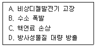
- A → B → C → D
- A → C → B → D
- B → A → C → D
- B → C → A → D
(정답률: 알수없음)
69. 전기출력 100만kWe인 원자력발전소가 있다. 가동률이 80%이고 전기판매 단가가 kWh당 50원일 때, 이 발전소의 연간 전기 판매대금은 얼마인가? (단, 1년은 365일이다.)
- 약 150억원
- 약 230억원
- 약 3500억원
- 약 5500억원
(정답률: 알수없음)
70. 다음 중 천연우라늄을 연료로 사용하는 가압중수로(PHWR)형 노형에서 원자로냉각재로 중수를 사용하는 근본적 이유는?
- 중수의 작은 중성자 흡수단면적
- 중성자에 의한 냉각재 방사화 저감
- 원자로 냉각재계통 부식 최소화
- 열전달 향상
(정답률: 알수없음)
71. 원자력발전소에서는 핵분열의 부산물로 방사성물질이 방출된다. 이러한 방사성물질을 환경으로 방출되는 것을 차단하기 위한 방법으로 틀린 것은?
- 중성자 조사시편
- 핵연료 피복제
- 원자로 용기
- 원자로 건물
(정답률: 알수없음)
72. 다음의 원자력발전소 사고에서 공통증상으로 맞는 것은?
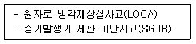
- 가압기 압력 감소
- 격납건물 압력 증가
- 격납건물 방사는 준위 증가
- 가압기 수위 증가
(정답률: 알수없음)
73. 다음 중 공학적안전설비(ESF)의 기능으로 틀린 것은?
- 방사성물질 외부누출 억제
- 비상노심 냉각으로 핵연료 피복재 보호
- 중성자 및 감마선에 의한 소성으로부터 원자로용기 보호
- 원자로냉각재상실사고(LOCA)시 핵분열 생성물 제거
(정답률: 알수없음)
74. 다음 중 핵연료 재장전 운전을 위하여 원자로냉각재 온도를 177℃에서 연료재장전온도까지 냉각하는 계통으로 맞는 것은?
- 정지냉각계통(잔연제거계통)
- 화학 및 체적제어계통
- 1차기기냉각해수계통
- 2차기기냉각수계통
(정답률: 알수없음)
75. 다음 중 중대사고 현상으로 틀린 것은?
- MCC(Molten Core Concrete Interaction)
- FCI(Fuel Collant Interaction)
- DCH(Direct Containment Heating)
- EOP(Emergency Operation Procedure)
(정답률: 알수없음)
76. 다음 중 모든 소내·외 교류전원상실시 안전관련 모선에 자동으로 전력을 공급하는 설비는?
- 축전지
- 비안전디젤발전기
- 대체교류디젤발전기
- 비상디젤발전기
(정답률: 알수없음)
77. 노심에 잉여반응도를 준 이유로 맞는 것은?
- 출력변화에 따른 135XE와 149Sm의 연소를 보상하기 위해
- 음(-)의 감속재 온도계수를 보상하기 위해
- 출력증발 동안 출력결손에 의해 첨가되는 부반응도를 보상하기 위해
- 노심수명 동안 238U의 239Pu로 전환을 보상하기 위해
(정답률: 알수없음)
78. 최대 선출력밀도(kW/ft)와 관련하여 고온 열수로계수를 제한하는 이유는?
- 원자로냉각재 온도를 제한치내로 유지
- 핵비등 방지
- 핵연료 펠렛 팽창 방지
- 핵연료 용융 방지
(정답률: 알수없음)
79. 운전중 핵연료 손상 예측에 이용되는 대표적인 핵종은?
- 삼중수소(3H)
- 요오드(131I)
- 사마리움(149Sm)
- 크립톤(87Kr)
(정답률: 알수없음)
80. 가연성 독물질을 원자로에 사용하는 이유로 맞는 것은?
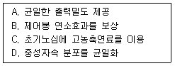
- A - B - C
- A - B - D
- A - C - D
- B - C - D
(정답률: 알수없음)
5과목: 방사선이용 및 보건물리
81. 다음 중 BF3 계수기와 직접 관계가 없는 것은?
- 비례계수관
- (n, p) 반응
- (n, ⍺)반응
- wall effect
(정답률: 알수없음)
82. 질량에너지전달계수(μtr/ρ)와 질량에너지흡수계수(μen/ρ)와 차이가 발생하는 주 원인은?
- 제동복사
- 컴프턴산란
- 광전효과
- 전자쌍생성
(정답률: 알수없음)
83. 어떤 방사성물질의 유효반감기가 5일인 경우, 생물학적 반감기는? (단, 물리적 반감기는 10일이다.)
- 5일
- 8일
- 10일
- 15일
(정답률: 알수없음)
84. 10cGy의 방사선이 1kg의 공기 중에서 만드는 이온쌍의 수는 약 얼마인가? (단, 공기에서 1개의 이온쌍을 생성하는 데 필요한 평균에너지는 34eV이다.)
- 1.84 × 1016 이온쌍
- 2.55 × 1016 이온쌍
- 3.68 × 1016 이온쌍
- 4.14 × 1016 이온쌍
(정답률: 알수없음)
85. 측정값에서 나타난 요동이 방사능붕괴에 대한 분포함수인 포와송(Poisson) 분포에서 벗어난 정도를 평가함으로써 계측시스템의 오작동 여부를 검증하는 방법은?
- t 검증
- χ2 검증
- Gaussian 검증
- Rosner 검증
(정답률: 알수없음)
86. 방사선이 인체에 미치는 영향에 대한 설명 중 옳지 않은 것은?
- 확률적 영향은 문턱선량 없이 선량에 비례하는 위험이 있는 것으로 가정한다.
- 결정적 영향은 대체로 급성이며, 증상의 심각도가 선량에 비례한다.
- 백내장은 확률적 영향이다.
- 확률적 영향에 대한 방호 개념은 합리적 범위에서 위험을 최소화하는 것이다.
(정답률: 알수없음)
87. 자연돌연변이와 방사선에 의한 유전적 영향을 평가하는 척도는?
- 배가선량(Double Dose)
- 선량선량률효과인자(Dose and Dose Rate Effectiveness Factor)
- 상대생물학적효과비(Relative Biological Effectiveness)
- 구경꾼효과(By-stander Effect)
(정답률: 알수없음)
88. 다음 방사선의 종류 중 연속에너지 스펙트럼을 갖는 것은?
- 오제전자
- 감마선
- 내부전환전자
- 베타선
(정답률: 알수없음)
89. 1 MeV 에너지를 지닌 감마선을 방출하는 핵종의 초기 방사선량률을 납을 이용하여 1/16으로 줄이고자 한다. 필요한 납의 두께는 약 얼마인가? (단, 납의 질량 에너지감쇠계수와 밀도는 각각 μ/ρ=0.071cm2/g, ρ=11.34g/cm3이고, 축적인자는 무시한다.)
- 1.26cm
- 1.91cm
- 2.67cm
- 3.44cm
(정답률: 알수없음)
90. 고순도반도체검출기(HPGe)를 이용한 감마선핵종 분석시스템으로 미지의 시료를 측정한 결과 950keV에 해당하는 채널에서 전에너지 피크(Photo Peak)가 나타났다. 측정된 스펙트럼에서 기대할 수 없는 피크는?
- 단일이탈 피크
- 특성 X-선 피크
- 컴프턴 단애(Compton Edge)
- 후방산란 피크
(정답률: 알수없음)
91. Nal(Tl) 섬광계수기로 5,000Bq의 방사능을 갖는 교정용 137Cs 선원을 1분 동안 측정하여 35,000counts를 얻었다. 이때 백그라운드 계수율이 600cpm이었다면 선원에서 방출되는 감마선에 대한 검출기의 계수효율은 약 얼마인가? (단, 137Cs 선원의 감마선 방출률은 85%이다.)
- 13.5%
- 15.2%
- 17.3%
- 18.9%
(정답률: 알수없음)
92. 감마선 핵종분석에 앞서 수행하는 에너지교정을 바르게 설명하고 있는 것은?
- 방사성핵종의 방사능과 채널과의 관계를 설정하는 절차이다.
- 방사성핵종의 방사능과 감마선의 에너지와의 관계를 설정하는 절차이다.
- 감마선의 에너지와 채널과의 관계를 설정하는 절차이다.
- 감마선의 에너지와 효율과의 관계를 설정하는 절차이다.
(정답률: 알수없음)
93. 다음의 설명 중 옳은 것끼리 짝지은 것은?
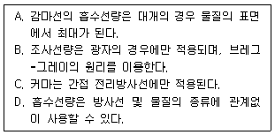
- A, B
- A, C
- B, D
- C, D
(정답률: 알수없음)
94. 일반인에 대한 선량한도가 방사선작업자보다 낮게 설정된 이유로 옳지 않은 것은?
- 위험에 대한 수용준위가 일반인의 경우 작업자 보다 낮기 때문이다.
- 일반인의 피폭량은 작업자 보다 상대적으로 낮아 집단선량이 낮기 때문이다.
- 일반인에는 방사선에 민감한 유아 및 아동과 같은 연령층이 포함되어 있기 때문이다.
- 작업자에 대해서는 적극적인 피폭관리가 이루어지고 있기 때문이다.
(정답률: 알수없음)
95. 발단선량 값이 가장 작은 것으로 평가되는 결정적 영향은?
- 백혈구 감소
- 백내장
- 피부의 홍반
- 갑상선 기능저하
(정답률: 알수없음)
96. 다음의 방사성동위원소 사용시설 중 표면오염 가능성이 가장 큰 경우는?
- 갑상선 치료에 131I을 사용하는 병원
- 90Sr을 이용하는 종이 두께계를 사용하는 제지공장
- IC칩 불량검사에 85Kr을 사용하는 반도체 공장
- 식품조사를 실시하는 대단위 60Co 조사시설
(정답률: 알수없음)
97. 방사선 측정의 정확도를 높이기 위한 방법으로 볼수 없는 것은?
- 여러 가지 종류의 계측기를 사용한다.
- 차폐를 하여 백그라운드를 낮춘다.
- 계수시간을 길게 한다.
- 기하학적 효율 등을 크게 하여 전체적인 계수효율을 높인다.
(정답률: 알수없음)
98. 다음 중 삼중수소의 특성이 아닌 것은?
- 삼중수소는 저에너지의 ß선만 방출하는 핵종이다.
- 체내에 섭취시 전신, 근육에 침착된다.
- ß선의 최대에너지는 0.018keV로 낮다.
- 물리적 반감기는 12.3년이고, 유효 반감기는 10일이다.
(정답률: 알수없음)
99. 매질 내를 통과하는 하전입자에 대한 설명 중 가장 옳은 것은?
- 에너지 손실률은 전하량에 비례하고, 하전입자의 속도에 반비례한다.
- 에너지 손실률은 하전입자의 속도에 비례하고, 전하량에 반비례한다.
- 에너지 손실률은 하전입자의 속도와 전하량에 비례한다.
- 에너지 손실률은 하전입자의 속도와 전하량에 반비례한다.
(정답률: 알수없음)
100. 0.1에서 2 MeV 사이의 에너지를 가지는 광자가 물이나 공기와 반응할 경우 가장 많이 일어나는 반응은?
- 전자쌍생성(Pair Production)
- 컴프턴 산란(Compton Scattering)
- 광전효과(Photoelectric Effect)
- 톰슨산란(Thomson Scattering)
(정답률: 알수없음)